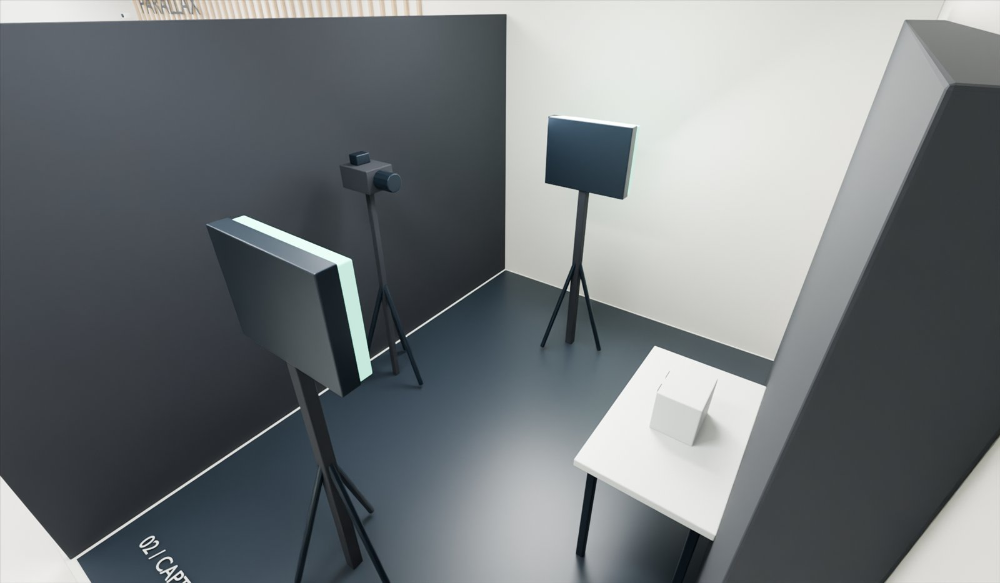
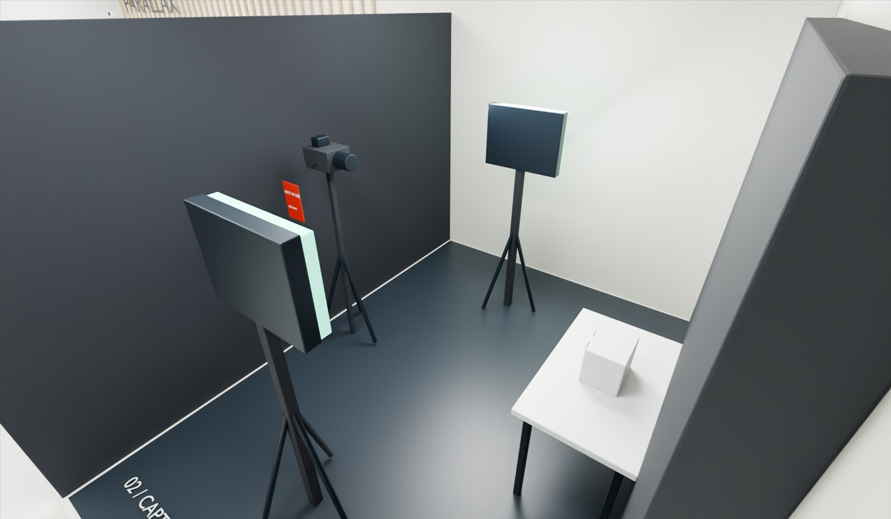

P10 · LAB MAP
Find your place in the lab.
Plan first, 3D on request. Search by ID, select from the list, plan or model, and read everything in an HTML drawer.
- Availability and occupancy shown as separate facts, with freshness and a stale state
- Five named viewpoints, reset, follow-camera toggle
- Model failure and no-WebGL fall back to the plan without losing selection
P13 · SCENE STUDIO · E12
Explore the camera’s viewpoint.
Scene, camera image and interpretation side by side. Every setting is a number you can reproduce at the C1 tripod.
- Visibility measured from an object-ID render, not guessed
- Six presets including an occlusion example and an impossible position, explained
- Snapshots keep settings with the explanation; a plan approximation works without WebGL
SHOT LIST · G17 · CYCLES · 128 SAMPLES · DENOISED
Renders that expose the designed features.
ONE MODEL, TWO STATES
The Phase 7 restriction, physically.


3D INTERACTION CONTRACT · G16
Optional, accessible, honest.
| Rule | How P8-A meets it |
|---|---|
| G16.01–02 Readable default · named views | Overview cutaway plus Capture, Signal bench, Workstations and Demonstration viewpoints; no precision orbit required. |
| G16.03 HTML detail panel | All resource facts and actions live in the drawer; the canvas carries no essential text. |
| G16.04, 07, 12 Keyboard list, search, no silent loss | Every resource is in the searchable list and focusable on the plan, including items hidden in 3D. |
| G16.05, 10 Reset · camera follow can be disabled | Reset view button; “Move the camera to the selected resource” toggle; reduced motion jumps instead of animating. |
| G16.08–09 Availability ≠ occupancy · staleness | Two labelled facts per resource; timestamp and stale state reviewable from the state selector. |
| G16.13–15 Capability detection · opt-in download · optional | Plan by default; WebGL2 detection; the 3.3 MB model loads only on request; failures return to the plan. |
| G15.04, 07 Separate exports · asset IDs | lab_studio.glb for presentation, lab_interactive.glb with one node per resource ID for the map. |
| G15.15 Not a live twin | States come from data/resources.json and are labelled example state. |
Prepared study / Renders and models come from spatial/lab_geometry.json (P4-D conceptual envelope) via spatial/blender/render_phase8.py. Equipment forms are illustrative; Scene Studio is a simulation of geometry only. Participant and device testing belong to Phase 9.